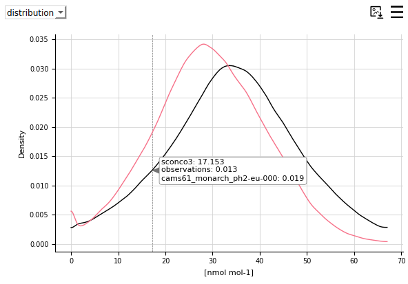

Plot customization
Editing the plot style from the configuration files
If you want to edit the style of your plots, you will need to edit it in one of the following files and launch the tool again:
Plots in the dashboard:
/providentia/settings/plot_characteristics_dashboard.jsonPlots in the offline reports:
/providentia/settings/plot_characteristics_offline.json
Editing the plot style in the dashboard
Changing the plot style
The style of the plots can be edited by clicking on the burger menus and changing the settings.

Legend picking
Clicking on the legend labels will remove or add data to each of the plots. If the label appears in bold, the data will be visible. If not, it will disappear.

Changing the statistics
The statistics in the statsummary can be updated from the burger menu.

Information on hover
Most plots show information when hovering over them. Take a look for instance at the distribution plot:
Smoothing
It is possible to add a smoothing line to the timeseries plot and make the points disappear. In order to achieve this, you will need to increase the smooth window, which by default is 0 and bring the marker size down to 0. You can also use the plot option hidedata to hide the points.